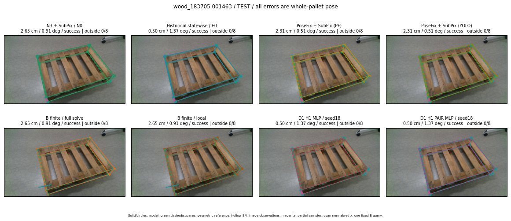

Whole-pallet pose errors; reference is a fixed geometric annotation, not certified physical GT.

Scores are uncalibrated logits. N0 retention is a numerical pose alias; it differs from H0 none or B fallback. B/I and profiles in baseline/B panels are original observations; L panels use new D1 observations. Only one deterministic supported B query is shown in a thumbnail; full support counts are below. Grey privacy rectangles edit the display copy only and are unrelated to O states; all observations were measured on original pixels. Thumbnails use JPEG quality85; detailed scientific panels are PNG.
| Method | Whole pose / cm, deg | Actual source | Selected ID | Score | Archived candidates | Eligible | N0 retained | H0 none | Fallback | Finite profiles |
|---|---|---|---|---|---|---|---|---|---|---|
| Raw YOLO + F | 2.22 cm / 1.25 deg / success | OTHER | None | N/A | N/A | N/A | False | N/A | None | N/A |
| N3 + SubPix / N0 | 2.65 cm / 0.91 deg / success | N0 | None | N/A | N/A | N/A | True | N/A | None | N/A |
| Historical statewise / E0 | 0.50 cm / 1.37 deg / success | E0_REGENERATED | None | N/A | N/A | N/A | False | N/A | False | N/A |
| PoseFix raw | 2.01 cm / 0.33 deg / success | OTHER | None | N/A | N/A | N/A | False | N/A | None | N/A |
| PoseFix + SubPix (PF) | 2.31 cm / 0.51 deg / success | OTHER | None | N/A | N/A | N/A | False | N/A | False | historical support records 9; finite audit N/A |
| PoseFix + SubPix (YOLO) | 2.31 cm / 0.51 deg / success | OTHER | None | N/A | N/A | N/A | False | N/A | False | historical support records 9; finite audit N/A |
| Historical L, seed18 | 0.50 cm / 1.37 deg / success | E0_REGENERATED | G13/ORIGINAL_WD/sample/0 | N/A | 85 | 85 | False | False | False | N/A |
| Historical B fixed bank | 0.50 cm / 1.37 deg / success | E0_REGENERATED | G13/ORIGINAL_WD/sample/0 | N/A | N/A | N/A | False | N/A | False | N/A |
| Historical B full | 0.69 cm / 1.82 deg / success | OTHER | NEW/B/ORIGINAL_WD/h0/G13/ORIGINAL_WD/sample/0/PROPOSED_NATIVE_YAW_0 | N/A | N/A | N/A | False | N/A | False | N/A |
| Historical edge full | 3.72 cm / 3.54 deg / success | OTHER | NEW/edge/ORIGINAL_WD/h0/G13/ORIGINAL_WD/sample/0/PROPOSED_NATIVE_YAW_0 | N/A | N/A | N/A | False | N/A | False | N/A |
| Historical AB full | 0.69 cm / 1.82 deg / success | OTHER | NEW/AB/ORIGINAL_WD/h0/G13/ORIGINAL_WD/sample/0/PROPOSED_NATIVE_YAW_0 | N/A | N/A | N/A | False | N/A | False | N/A |
| B finite / fixed bank | 2.65 cm / 0.91 deg / success | N0 | N0 | N/A | N/A | N/A | True | N/A | True | N/A |
| B finite / full solve | 2.65 cm / 0.91 deg / success | N0 | N0 | N/A | N/A | N/A | True | N/A | True | N/A |
| B finite / local | 2.65 cm / 0.91 deg / success | N0 | N0 | N/A | N/A | N/A | True | N/A | True | N/A |
| Edge finite / full solve | 2.65 cm / 0.91 deg / success | N0 | N0 | N/A | N/A | N/A | True | N/A | True | N/A |
| D0 H0 MLP / seed18 | 0.50 cm / 1.37 deg / success | E0_REGENERATED | E0_REGENERATED | 6.549386978149414 | 53 | 53 | False | False | False | N/A |
| D0 H0 MLP / seed19 | 0.50 cm / 1.37 deg / success | E0_REGENERATED | E0_REGENERATED | 8.15135383605957 | 53 | 53 | False | False | False | N/A |
| D0 H0 MLP / seed20 | 0.50 cm / 1.37 deg / success | E0_REGENERATED | E0_REGENERATED | 5.171605587005615 | 53 | 53 | False | False | False | N/A |
| D0 H1 MLP / seed18 | 0.50 cm / 1.37 deg / success | E0_REGENERATED | E0_REGENERATED | 1.4893031120300293 | 53 | 53 | False | False | False | N/A |
| D0 H1 MLP / seed19 | 0.50 cm / 1.37 deg / success | E0_REGENERATED | E0_REGENERATED | 1.4839524030685425 | 53 | 53 | False | False | False | N/A |
| D0 H1 MLP / seed20 | 0.50 cm / 1.37 deg / success | E0_REGENERATED | E0_REGENERATED | 1.622849941253662 | 53 | 53 | False | False | False | N/A |
| D1 H0 MLP / seed18 | 0.50 cm / 1.37 deg / success | E0_REGENERATED | E0_REGENERATED | 9.692736625671387 | 53 | 53 | False | False | False | N/A |
| D1 H0 MLP / seed19 | 0.50 cm / 1.37 deg / success | E0_REGENERATED | E0_REGENERATED | 10.840357780456543 | 53 | 53 | False | False | False | N/A |
| D1 H0 MLP / seed20 | 0.50 cm / 1.37 deg / success | E0_REGENERATED | E0_REGENERATED | 9.505107879638672 | 53 | 53 | False | False | False | N/A |
| D1 H1 MLP / seed18 | 0.50 cm / 1.37 deg / success | E0_REGENERATED | E0_REGENERATED | 1.62616765499115 | 53 | 53 | False | False | False | N/A |
| D1 H1 MLP / seed19 | 0.50 cm / 1.37 deg / success | E0_REGENERATED | E0_REGENERATED | 1.21115243434906 | 53 | 53 | False | False | False | N/A |
| D1 H1 MLP / seed20 | 0.50 cm / 1.37 deg / success | E0_REGENERATED | E0_REGENERATED | 1.7427374124526978 | 53 | 53 | False | False | False | N/A |
| D1 H1 ROLE AFFINE / seed18 | 0.50 cm / 1.37 deg / success | E0_REGENERATED | E0_REGENERATED | 2.6255571842193604 | 53 | 53 | False | False | False | N/A |
| D1 H1 ROLE AFFINE / seed19 | 0.50 cm / 1.37 deg / success | E0_REGENERATED | E0_REGENERATED | 1.363072156906128 | 53 | 53 | False | False | False | N/A |
| D1 H1 ROLE AFFINE / seed20 | 0.50 cm / 1.37 deg / success | E0_REGENERATED | E0_REGENERATED | 2.1946864128112793 | 53 | 53 | False | False | False | N/A |
| D1 H1 PAIR MLP / seed18 | 0.50 cm / 1.37 deg / success | E0_REGENERATED | E0_REGENERATED | 0.2889964282512665 | 53 | 2 | False | False | False | N/A |
| D1 H1 PAIR MLP / seed19 | 0.50 cm / 1.37 deg / success | E0_REGENERATED | E0_REGENERATED | 1.5185467004776 | 53 | 2 | False | False | False | N/A |
| D1 H1 PAIR MLP / seed20 | 0.50 cm / 1.37 deg / success | E0_REGENERATED | E0_REGENERATED | 1.6856766939163208 | 53 | 2 | False | False | False | N/A |
| D1 H1 PAIR ROLE AFFINE / seed18 | 0.50 cm / 1.37 deg / success | E0_REGENERATED | E0_REGENERATED | 1.3264907598495483 | 53 | 2 | False | False | False | N/A |
| D1 H1 PAIR ROLE AFFINE / seed19 | 0.50 cm / 1.37 deg / success | E0_REGENERATED | E0_REGENERATED | 1.6536405086517334 | 53 | 2 | False | False | False | N/A |
| D1 H1 PAIR ROLE AFFINE / seed20 | 0.50 cm / 1.37 deg / success | E0_REGENERATED | E0_REGENERATED | 1.2437095642089844 | 53 | 2 | False | False | False | N/A |
| Regenerated common E0 | 0.50 cm / 1.37 deg / success | E0_REGENERATED | E0_REGENERATED | N/A | N/A | N/A | False | N/A | False | N/A |